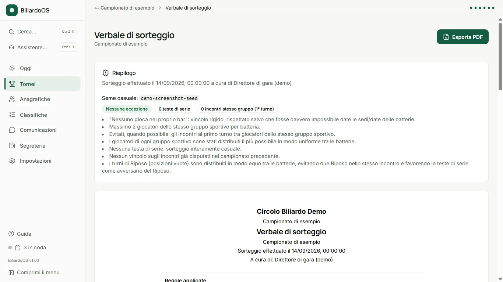
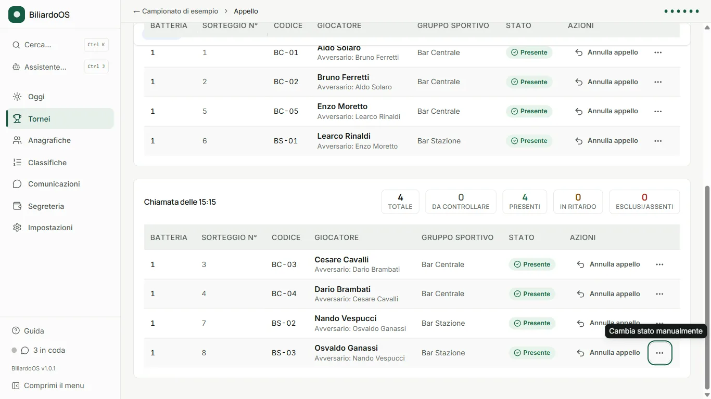
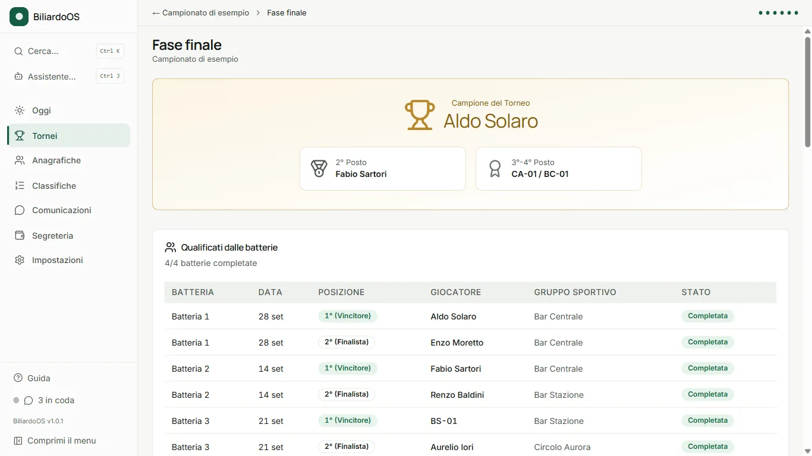

Guida rapida
Dal primo avvio al podio.
Per chi organizza per la prima volta un campionato a batterie con BiliardoOS. Due pagine, dall’installazione alla chiusura del campionato.
- Oggi
- Tornei
- Anagrafiche
- Classifiche
- Comunicazioni
- Segreteria
- Impostazioni
- ① Impostazione
- ② Sorteggio
- ③ Convocazioni
- ④ Serate
- ⑤ Fase finale
- ⑥ Chiusura




1 Installazione
Scarica l’installer dal pulsante Scarica per Windows sul sito, poi apri BiliardoOS-Setup-*.exe. Non servono permessi da amministratore: si installa per l’utente corrente.
Avviso “Windows ha protetto il PC” (SmartScreen): clicca Ulteriori informazioni poi Esegui comunque. Compare perché l’eseguibile non è ancora firmato digitalmente, non perché contenga qualcosa di dannoso.
2 Primo avvio
Alla prima apertura scegli Inizia da zero (o Ripristina da una copia se arrivi da un altro PC) nella schermata “Benvenuto in BiliardoOS”.
La configurazione guidata copre, in ordine: Intestazione (dati del circolo), Sedi di gioco, Ufficiali di gara, Copia esterna, Assistente AI locale, fino a “Pronti per iniziare”. Ogni voce resta modificabile in seguito da Anagrafiche e Impostazioni.
3 Crea il campionato
Da Tornei apri la creazione di un nuovo campionato a batterie. Il wizard ha 5 passi: Info e gruppi → Distribuzione → Regole sorteggio → Punteggi → Riepilogo.
- Scegli Singolo o Coppie e la Dimensione Batteria: 8 o 4 giocatori.
- Assegna sedi e data a ogni batteria in “Distribuzione”.
- Le batterie da 8 hanno due orari di chiamata (1ª: posti 1-2 e 5-6; 2ª: posti 3-4 e 7-8); quelle da 4 un solo orario per coppia di posti.
4 Il sorteggio
Nella fase Sorteggio, Anteprima sorteggio genera più proposte: scegli quella che preferisci con Scegli questo per confermarla — fino ad allora nulla viene salvato.
Dopo la conferma ottieni il Verbale di sorteggio (esportabile in PDF) e puoi ancora correggere manualmente gli abbinamenti, finché la prima partita di una batteria non ha un risultato.
5 Convocazioni
Nella fase Convocazioni scegli il formato tagliando: Ticket singolo oppure 4 per A4. Da qui esporti il PDF e comunichi orari e sede ai referenti via email o WhatsApp.
Un promemoria automatico può avvisare i convocati il giorno prima della serata.
6 La serata di gara
Nella fase Serate, gruppo “Prima”: prepara il kit serata (referti di batteria, cartelli tavoli, copie di riserva) da portare in sede.
Gruppo “Durante” — Appello: segna ogni giocatore Presente o Assente all’orario di chiamata. Poi inserisci i risultati batteria per batteria: il pulsante con il nome del vincitore (es. “Vince Mario Rossi”) registra l’esito.
Gruppo “Dopo”: quando tutte le batterie hanno un risultato, Chiudi la serata; poi Invia i risultati ai giocatori.
7 Fase finale e classifiche
Completate le batterie qualificanti, Genera la fase finale crea il tabellone a eliminazione; registra i risultati fino al podio (campione, 2° posto, 3°-4° posto).
Le Classifiche di stagione (menu laterale) si aggiornano da sole, per giocatore e per gruppo sportivo, e restano consultabili anche a campionato concluso.
8 Chiusura del campionato
Quando il podio è definito e ogni serata è chiusa, la fase Chiusura propone Chiudi il campionato: da qui generi il pacchetto finale, il report del torneo e l’esportazione Excel. Il campionato resta consultabile anche archiviato.
9 Backup e più PC
Da Impostazioni → Backup: crea un backup manuale in ogni momento, ripristina o esporta un backup precedente. Ogni aggiornamento dell’app crea comunque un backup automatico prima di installarsi.
Per lavorare da più di un PC (casa e portatile, o sede remota) usa la funzione facoltativa Casa + Portatile in Impostazioni, oppure una copia di sicurezza esterna su OneDrive/USB/NAS.
10 Serve aiuto?
- Guida in-app: voce “Guida” nel menu laterale, con lo stesso percorso di questa pagina e tutte le funzionalità avanzate spiegate una per una.
- Assistente AI (opzionale, locale): chiedi come si usa una funzione o interroga i dati del tuo campionato, senza inviare nulla online.
- Un problema tecnico? Impostazioni → “Segnala un problema” prepara un pacchetto diagnostico, senza dati personali dei giocatori, da allegare a una segnalazione.
- Domande, idee o bug: GitHub Discussions per confronto e idee, GitHub Issues per segnalare un malfunzionamento.